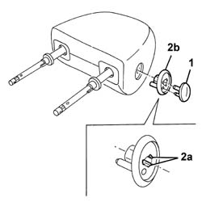
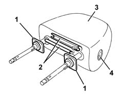

7045B16 CENTRAL FRONT SEAT HEAD RESTRAINT - R R
- Path
- Procedures > 70 FITTINGS > 7045 FRONT SEATS > 7045B FRONT SEAT HEAD RESTRAINT/ARM REST > 7045B16 CENTRAL FRONT SEAT HEAD RESTRAINT - R R
- Kind
- repair procedure (removal / refitting; the operation number is the code)
- Applies to
- all engines; all production periods
- Interactive page
- https://sloeber94.github.io/elrnDB-aGt/en/#/125001927
Applies to: all engines; all production periods
 Removing
Removing
 Refitting
Refitting1. Prise up the head restraint height adjustment button.
2. Undo tabs (2a) and remove frame (2b).

Applies to: all engines; all production periods
1. Prise up the head restraint pin frames.
2. Unhook the trim ends from one another.
3. Remove the trim.
4. Remove the padding if necessary.

Applies to: all engines; all production periods
Refitting
RemovingCheck that the cover is undamaged.
If removed, refit the padding.
Fit the trim and do up the two ends.
Fit the head restraint pin frames.
Fit the head restraint height adjustment button frame.
Fit the button in its seat.